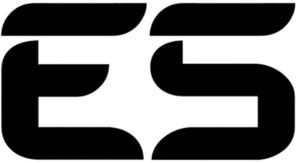

Trade Mark Journal No.2025/018 2 May 2025
WO0000001837849 (1,3,6,7,8,9,10,11,12,14,18,20,21,22,24,25,26,27,28)
Office of origin: Italy
Date of International Registration:11 November 2024
Date of designation in the UK:
11 November 2024

The trademark consists of an imprint depicting the wording ES in fancy characters.
International priority date claimed: 3 July 2024
(Italy)
(302024000107524)
- Class 1
- Dry ice [carbon dioxide]; chemicals for use in industry, science and photography, as well as in agriculture, horticulture and forestry; unprocessed artificial resins, unprocessed plastics; fire extinguishing and fire prevention compositions; tempering and soldering preparations; substances for tanning animal skins and hides; adhesives for use in industry; putties and other paste fillers; compost, manures, fertilizers; biological preparations for use in industry and science.
- Class 3
- Blush pencils; non-medicated cosmetics and toiletry preparations; non-medicated dentifrices; perfumery, essential oils; bleaching preparations and other substances for laundry use; cleaning, polishing and abrasive preparations.
- Class 6
- Padlocks of metal; bicycle locks of metal; common metals and their alloys, ores; metal materials for building and construction; transportable buildings of metal; non-electric cables and wires of common metal; small items of metal hardware; metal containers for storage or transport; safes.
- Class 7
- Mechanically operated hand-held crimpers; positive displacement pumps; machine tools, power-operated tools; motors and engines, except for land vehicles; machine coupling and transmission components, except for land vehicles; agricultural implements, other than hand-operated hand tools; incubators for eggs; automatic vending machines.
- Class 8
- Manicure implements; nail buffers for use in manicure; implements for pedicure; mustache and beard trimmers; hand tools and implements, hand-operated; cutlery; side arms, except firearms; razors.
- Class 9
- Scales; hand-held electronic scales; portable digital luggage scales; binoculars; socks for protection against accidents, irradiation and fire; pedometers; masks for swimming; scuba masks; scuba snorkels; cyclocomputers; sunglasses; frames for eyeglasses and sunglasses; cases for sunglasses; chains for sunglasses; sunglass frames; magnetic clip-on sunglass lenses; swim goggles; boots and shoes for protection against accidents; clothing for protection against injury; scientific, research, navigation, surveying, photographic, cinematographic, audiovisual, optical, weighing, measuring, signalling, detecting, testing, inspecting, life-saving and teaching apparatus and instruments; apparatus and instruments for conducting, switching, transforming, accumulating, regulating or controlling the distribution or use of electricity; apparatus and instruments for recording, transmitting, reproducing or processing sound, images or data; recorded and downloadable media, computer software, blank digital or analogue recording and storage media; mechanisms for coin-operated apparatus; cash registers, calculating devices; computers and computer peripheral devices; diving suits, divers' masks, ear plugs for divers, nose clips for divers and swimmers, gloves for divers, breathing apparatus for underwater swimming; fire-extinguishing apparatus.
- Class 10
- Ice bags for medical purposes; pulse rate monitors; knee braces for medical purposes; elbow guards for medical purposes; tennis elbow supports; massage apparatus; body massagers; massage apparatus for personal use; apparatus for use in toning muscles for medical rehabilitation; wrist supports for medical purposes; surgical, medical, dental and veterinary apparatus and instruments; artificial limbs, eyes and teeth; orthopaedic articles; suture materials; therapeutic and assistive devices adapted for persons with disabilities; massage apparatus; apparatus, devices and articles for nursing infants; sexual activity apparatus, devices and articles.
- Class 11
- Electric hand drying apparatus for washrooms; nail lamps; electric refrigerators; refrigerating apparatus; portable refrigerators; bicycle lights; lights for vehicles; electric torches; solar-powered torches; rechargeable lanterns; sun lamps; led flashlights; light-emitting diode [led] luminaires; directional lights for bicycles; dynamo lights for bicycles; facial saunas; apparatus and installations for lighting, heating, cooling, steam generating, cooking, drying, ventilating, water supply and sanitary purposes.
- Class 12
- Saddlebags adapted for bicycles; rack trunk bags for bicycles; baskets adapted for bicycles; saddle covers for motorcycles; kayaks; paddles for kayaks; pumps for inflating bicycle tires; cargo carriers for vehicles; protective strips with reflective inlays for vehicle doors; bicycle carriers; vehicles; apparatus for locomotion by land, air or water.
- Class 14
- Sports watches; wristwatches; watches for women; clocks and watches, electric; precious metals and their alloys; jewellery, precious and semi-precious stones; horological and chronometric instruments.
- Class 18
- Vanity cases, not fitted; gym bags; beach bags; all-purpose sports bags; purses; multi-purpose purses [handbags]; cosmetic cases, not fitted; cosmetic purses; cosmetic purses, not fitted; belt bags; wallets for attachment to belts; telescopic umbrellas; clutch bags [hand bags]; mountaineering sticks; hiking sticks; folding walking sticks; suitcases; suitcases with wheels; hiking rucksacks; rucksacks; sports packs; leather and imitations of leather; animal skins and hides; luggage and carrying bags; umbrellas and parasols; walking sticks; whips, harness and saddlery; collars, leashes and clothing for animals.
- Class 20
- Storage drawers [furniture]; hanging closet organizers; inflatable pillows; inflatable mattresses; camping furniture; hand-held mirrors [toilet mirrors]; camping tables; furniture, mirrors, picture frames; containers, not of metal, for storage or transport; unworked or semi-worked bone, horn, whalebone or mother-of-pearl; shells; meerschaum; yellow amber.
- Class 21
- Drinking bottles for sports; thermally insulated bags for food or beverages; bottles; insulating flasks; bottles, sold empty; insulating sleeves for holding bottles; aluminium water bottles, empty; plastic water bottles; water bottles, empty, for bicycles; reusable stainless steel water bottles; thermally insulated containers for food or beverages; thermally insulated tote bags for food or beverages; canister sets; make-up sponge holders; cotton ball jars; reusable ice cubes; cleaning combs; brushes; hairbrushes; plastic bath racks [caddies]; foam toe separators for use in pedicures; insulated flasks for household purposes; household or kitchen utensils and containers; cookware and tableware, except forks, knives and spoons; combs and sponges; brushes, except paintbrushes; brush-making materials; articles for cleaning purposes; unworked or semi-worked glass, except building glass; glassware, porcelain and earthenware.
- Class 22
- Hammocks; bungee cords; tents for camping; ropes and string; nets; tents and tarpaulins; awnings of textile or synthetic materials; sails; sacks for the transport and storage of materials in bulk; padding, cushioning and stuffing materials, except of paper, cardboard, rubber or plastics; raw fibrous textile materials and substitutes therefor.
- Class 24
- Picnic blankets; sleeping bags; bath towels; large bath towels; textile exercise towels; towels of cotton; beach towels; textiles and substitutes for textiles; household linen; curtains of textile or plastic.
- Class 25
- Sandals; sandals and beach shoes; thong footwear; bath robes; hooded bath robes; pumps [footwear]; Bermuda shorts; berets; bobble hats; caps with visors; knitted caps; neck tube scarves; boy shorts [underwear]; stockings; sport socks; sweat-absorbent stockings; knee-high stockings; socks; ankle socks; non-slip socks; anklets [socks]; tights; thermal socks; tank tops; sports vests; small hats; tuques; capri pants; slippers; slipper socks; women's foldable slippers; flip-flops [footwear]; money belts [clothing]; maternity smocks; suits; women's suits; men's suits; underpants; bathing suits; bathing caps; sweatshirts; sports jackets; fleece shorts; fleece vests; track jackets; hooded sweatshirts; jackets [clothing]; padded jackets; denim jackets; knit jackets; warm-up vests; quilted vests; wind vests; blousons; mittens and gloves [clothing]; underwear; men's underwear; thermal underwear; women's underwear; denim pants; leggings [leg warmers]; crew neck sweaters; turtleneck sweaters; sleeveless jerseys; sports jerseys; V-neck sweaters; polo knit tops; padded shirts for athletic use; chemises; hooded tops; printed shirts; polo shirts; short-sleeve shirts; long-sleeved shirts; warm-up tops; warm-up pants; baselayer bottoms; trousers; bloomers; three quarter length trousers; short trousers; slacks; sweatpants; waterproof pants [trousers]; moisture-wicking sports pants; pyjamas; down garments; down jackets; half-boots; rain ponchos; brassieres; moisture-wicking sports bras; bralettes; bandeaux [clothing]; sandals for women; work shoes; gymnastic shoes; waterproof shoes; flat shoes; walking boots; rubber shoes; shoes for casual wear; shirts; tops [clothing]; printed tee-shirts; long-sleeved T-shirts; short-sleeved T-shirts; light-reflecting coats; insoles for footwear; boots; sundresses; beach cover-ups; tracksuits; clothing, footwear, headwear.
- Class 26
- Elastic ribbons; lace, braid and embroidery, and haberdashery ribbons and bows; buttons, hooks and eyes, pins and needles; artificial flowers; hair decorations; false hair.
- Class 27
- Rubber mats; yoga mats; carpets, rugs, mats and matting, linoleum and other materials for covering existing floors; wall hangings, not of textile.
- Class 28
- Sit-up benches; bars for exercise; dumb-bell shafts for weight lifting; exercise bars; trolley bags for golf equipment; foosball tables; bar-bells for weight lifting; wrist and ankle weights for exercise; leg weights for exercise; weight lifting belts [sports articles]; jump ropes; hand wraps for sports use; knee pads for soccer; gloves for games; gloves for sports; face guards [sports articles]; rowing machines; gym balls for yoga; medicine balls [weighted balls for exercise]; balls for playing sports; pumps for inflating sports balls; stress relief balls for hand exercise; abdominal wheel rollers for fitness purposes; bar-bells; rackets; tennis rackets; stand-up paddleboards; games, toys and playthings; video game apparatus; gymnastic and sporting articles; decorations for Christmas trees.
EUROSPIN ITALIA S.P.A.
Representative: Dr. Modiano & Associati SpA, Via Meravigli 16, I-20123 Milano, ITALY